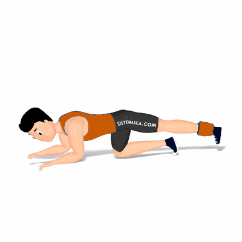

Flexão de Joelhos em 4 Apoios

Exercício para fortalecimento e hipertrofia dos músculos da coxa, com enfoque os bíceps femorais. Indicado a para praticante de musculação nível iniciante e intermediário.
Ficha Técnica
Tipo: Musculação
Grupo Muscular: Perna
Aparelho: Nenhum
Músculos: Nenhum
Como realizar
- Ajoelhe sobre um colchonete apoiando o troco sobre os cotovelos que deverão ficar flexionados em frente ao corpo;
- Coluna alinhada e a cabeça inclinada para baixo;
- Estenda a perna direita permanecendo-a próxima ao solo;
- Realize a flexão do joelho contraindo o músculo posterior de coxa;
- Estenda o joelho retornando à posição inicial de forma controlada;
- Repita os movimentos;
- Ao término das repetições, realize os movimentos com a perna esquerda.
 RC STORE
RC STORE